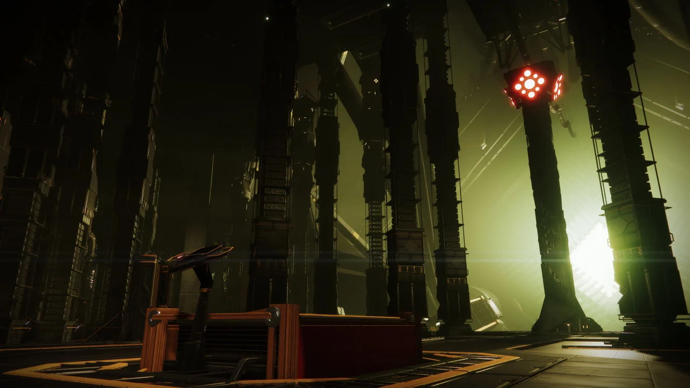
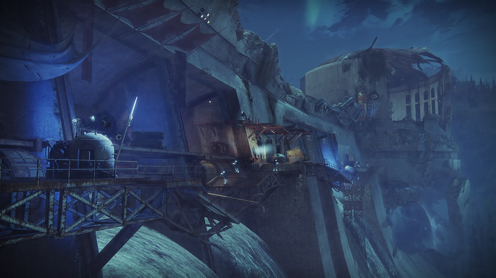
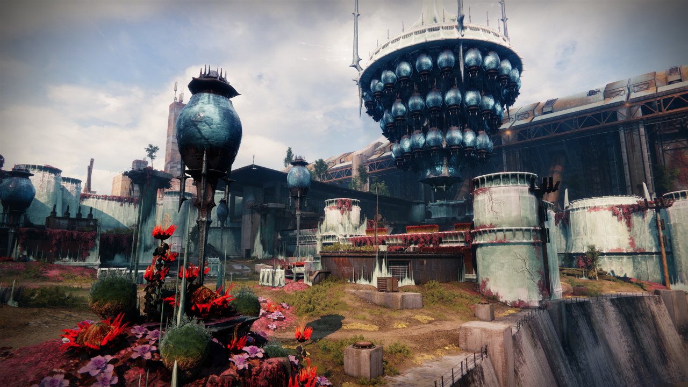

Home
Backstory
Nightfalls
The Final Shape
These are some Nightfall guides by an endgame content creator. Give them a watch to prepare yourself for the Nightfall!
Europa Battlegrounds
Mars Battlegrounds

Lake of Shadows

Heist Battleground: Moon
Cosmodrome Battleground

The Corrupted